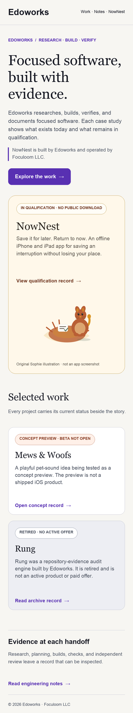
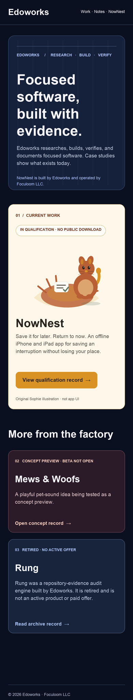
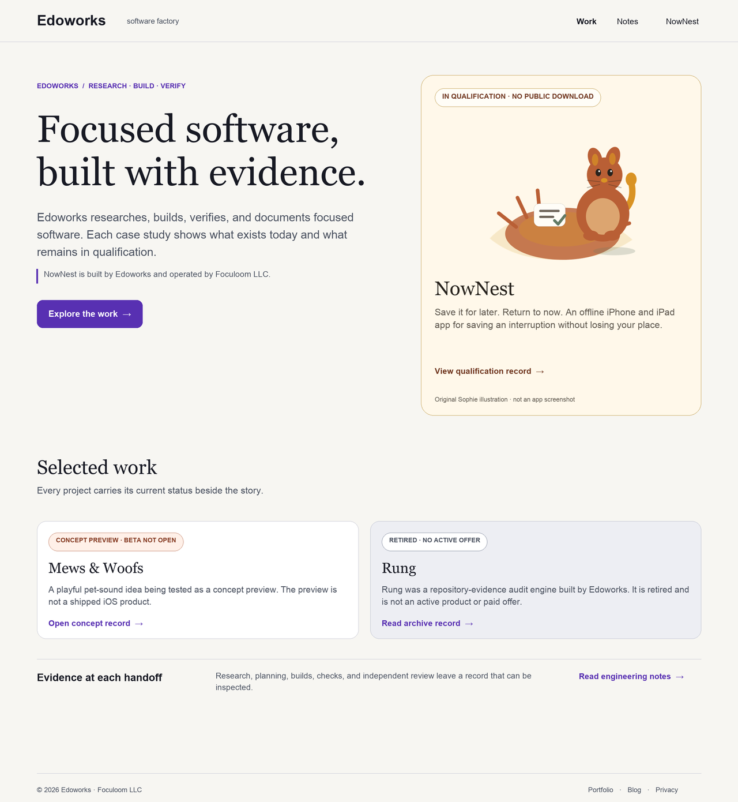
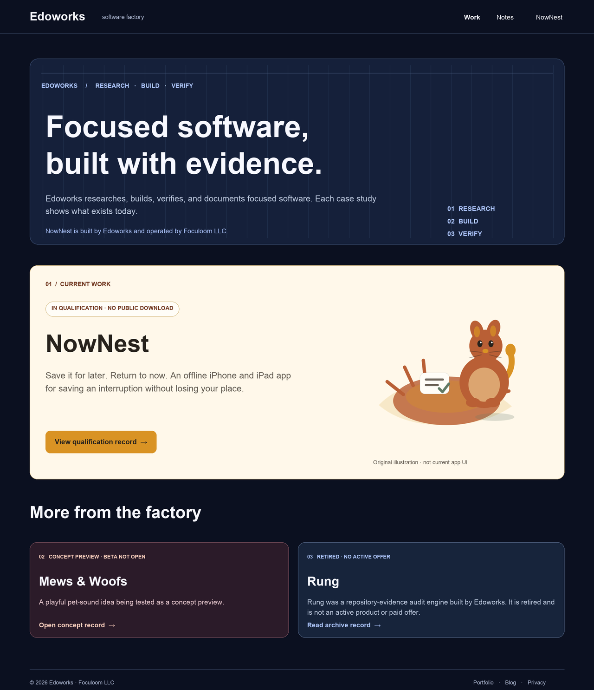
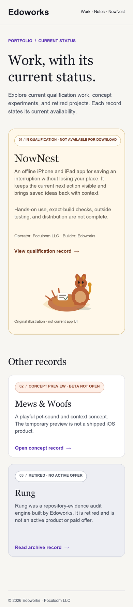
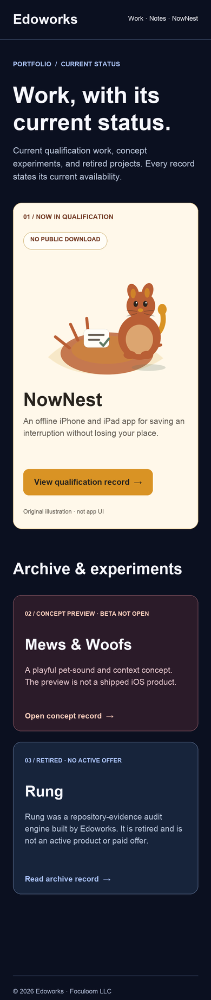
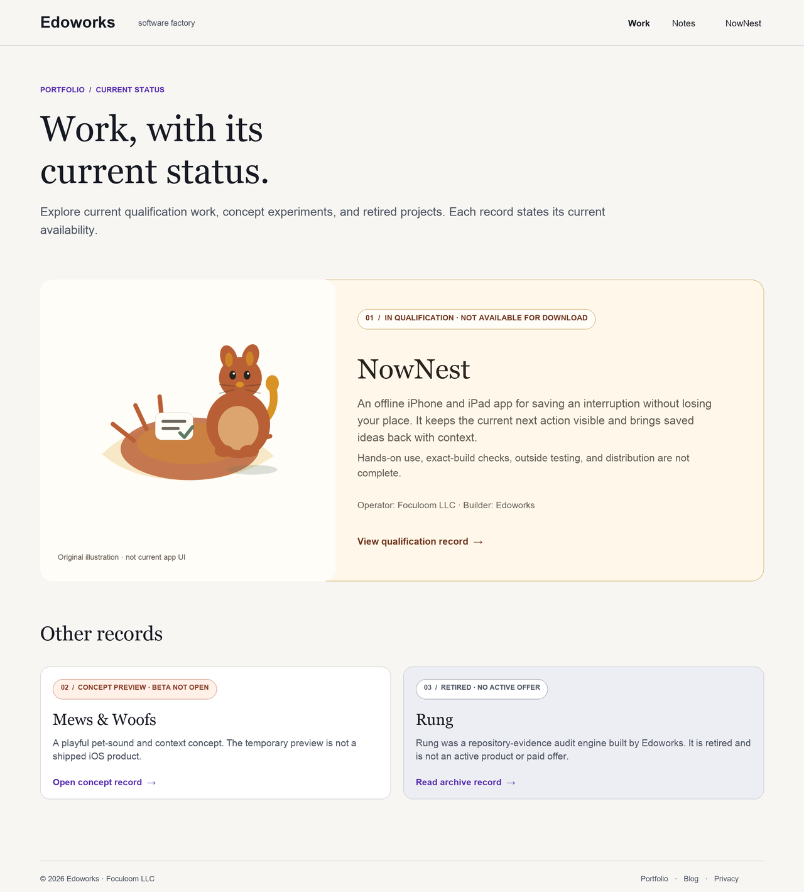
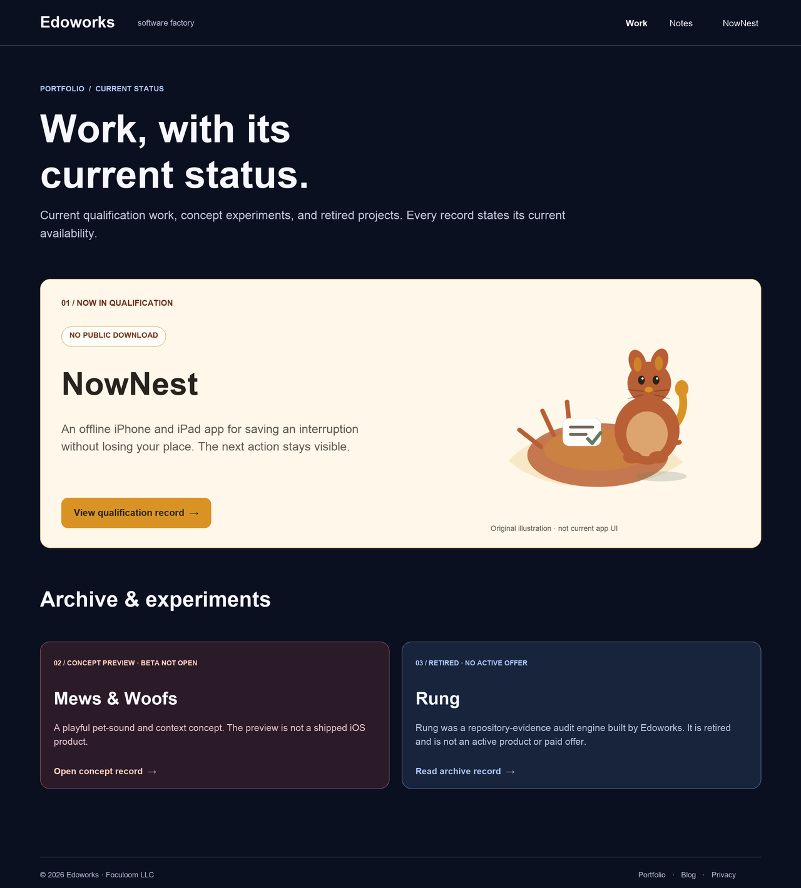

Home · 390 CSS pixel canvas


Home · 1280 CSS pixel canvas


Portfolio · 390 CSS pixel canvas


Portfolio · 1280 CSS pixel canvas


Provenance and review gates
The Sophie illustration is a raster conversion of the original nownest/assets/sophie-nest.svg in the Edoworks site repository. It is labeled as illustration, never current app UI. The comp uses no third-party photography or generated app screens. Sam and Tom must confirm the existing asset rights record before any changed public use.
Rung uses the retirement sentence from Foculoom’s draft public claims register. Foculoom’s public archive index records that the original edoworks/rung repository was deleted after recovery checks and preserves a fixed historical snapshot. An owner decision on historical website link policy remains open. The comps include no active source, install, release, support, or payment CTA.
Reviewer decision: accept, revise, or reject each direction with a specific canvas and reason. Publication requires owner approval, paired-site comprehension, exact branch browser captures, 400% reflow, keyboard and contrast checks, working links, and current factual claims. These checks are not conferred by this board.
Pixel equivalence is NOT RUN. Direction A is an authored composition using the key proposed HTML copy and hierarchy; its compact footer omits some HTML links and the repository build stamp. Direction B is an unimplemented alternative with some abbreviated supporting copy.
Prepared for Sam and Tom’s independent review. Source renderer: design/visual-directions/render_comps.py in the Edoworks review branch.